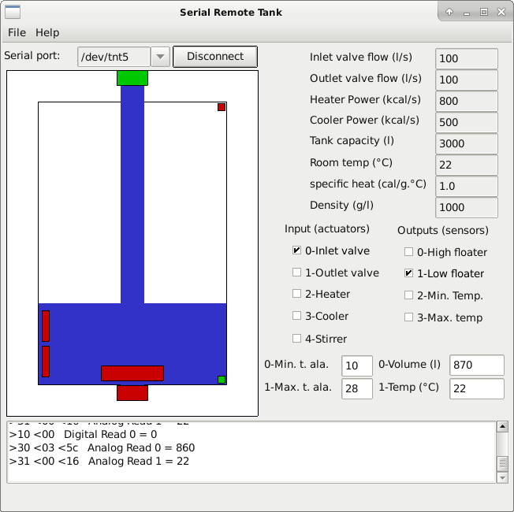

8.2 Serial Remote Tank
The serial remote tank is a tank simulator controlled by a serial communication protocol. The tank has several sensors and actuators that can be read and controlled using the communication protocol. The parameters of the serial communication port must be 19200 8N1.

To use this tool with PICSimLab you first need to configure a virtual serial port as described in Chapter: Serial Communication. It is possible to use this tool with a real serial port connected to a real device.